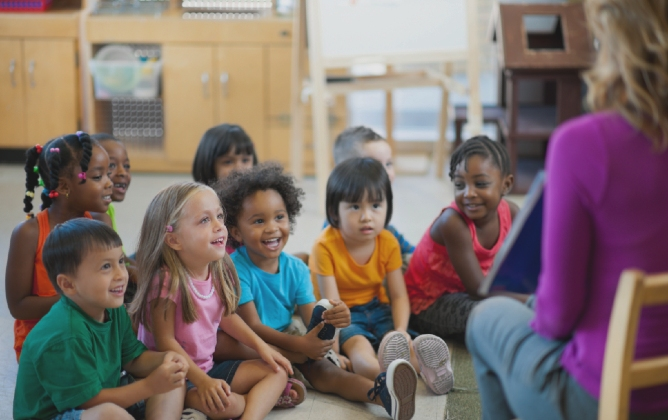
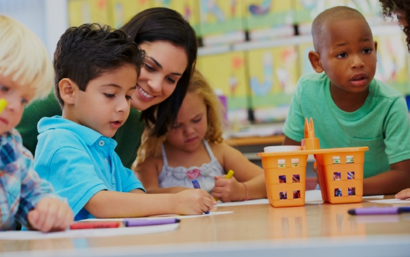

Childcare Course: Reasons Why You Should Think Early Education for Your Child
You've probably heard the saying "children should be seen and not heard", but there is a growing body of evidence that shows a lack of a regular early childhood education program has a negative impact on a child's future performance. Early years education not only develops critical skills like literacy, numeracy and reasoning skills, but has also been found to help boost a child's development of ethics and values, which will boost their academic performance in school and beyond.
Child's learning process
Adolescence is difficult for many kids, especially in today's fast-paced, technology-driven world. This is the time in a child's life when they begin to make decisions for themselves, and when they can begin to dictate their own learning style. In order to make the transition from a baby to a child, a child must begin to learn at a young age. The process varies by child, but research has shown that children tend to learn best in a child-centered environment.
Helps child get ready for kindergarten
Teaching your child the early years of education is very important. For some parents, the idea of modern school seems scary for their children, but there are many benefits to having your kid enrolled. By helping them get ready for school, you are helping him/her have a better life.

Develop independency
There's no doubt that the earlier your child starts learning, the better it will be for them later in life. There is no denying that our society is becoming more and more dependent on technology and less and less on interacting with the human world. This leaves only three options: Either we spend our days in front of a computer or television screen, or we spend our time in front of a screen that we control, or we spend our time in front of a screen that doesn't decide what we do.
Improves social skills
Early childhood education is the best investment any parent can make for their child. Studies show that children who are enrolled in early education programs are more likely to be prepared for school, have higher academic achievement, are more likely to succeed in later life, and are less likely to experience health problems.

Improves reading skills
New research proves that early childhood education is linked to an improved ability to read, compared to those children who didn't attend preschool. Studies have shown that children who attend early childhood education programs are more likely to learn to read than those who don't.
Improves attention span
There are many benefits to be gained from early education from a childcare course. The most obvious of these is that young children are more likely to develop a love of learning, which leads to a higher IQ and leads to a better education later in life.
But there are other benefits. Early education can help children to develop a positive self-image, which will give them a better understanding of themselves and develop a sense of self-confidence. Early childhood education also helps children to develop social skills, which will allow them to socialize with their peers, giving them a better understanding.
Teaches the child how to cooperate
Early education begins at birth. It is a lifelong process that involves all stages of a child's development, from the first moments of life, to education and training in a school environment, to learning about life and its challenges, to being active participants in society. It is the foundation upon which our children will grow up to be productive, responsible, and ultimately successful adults.